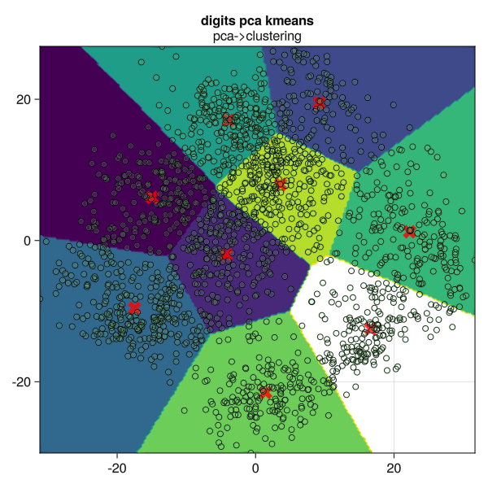

include("../utils.jl")
import MLJ: fit!, predict, transform,fitted_params
using CSV, DataFrames, GLMakie, Random
using MLJ
Random.seed!(34343)TaskLocalRNG()routine: project data to 2d space then proceed kmeans methods
include("../utils.jl")
import MLJ: fit!, predict, transform,fitted_params
using CSV, DataFrames, GLMakie, Random
using MLJ
Random.seed!(34343)TaskLocalRNG() load_csv(str::AbstractString) =
str |> d -> CSV.File("./data/$str.csv") |> DataFrame |> dropmissing
digits = load_csv("scikit_digits")
digits = coerce(digits, :target => Multiclass)
y, X = unpack(digits, ==(:target); rng = 123); PCA = @load PCA pkg = MultivariateStats
KMeans = @load KMeans pkg = Clustering
pca_model = PCA(; maxoutdim = 2)
kmeans_model = KMeans(; k =9)import MLJMultivariateStatsInterface ✔
import MLJClusteringInterface ✔[ Info: For silent loading, specify `verbosity=0`.
[ Info: For silent loading, specify `verbosity=0`. KMeans(
k = 9,
metric = Distances.SqEuclidean(0.0),
init = :kmpp) pca_mach = machine(pca_model, X) |> fit!
Xproj = transform(pca_mach, X)[ Info: Training machine(PCA(maxoutdim = 2, …), …).| Row | x1 | x2 |
|---|---|---|
| Float64 | Float64 | |
| 1 | 2.53068 | 7.10818 |
| 2 | -7.06737 | 2.69455 |
| 3 | 9.71838 | 16.8406 |
| 4 | 2.73069 | 10.0099 |
| 5 | -13.1702 | -13.6058 |
| 6 | -13.2824 | 8.86115 |
| 7 | 15.9065 | -16.5451 |
| 8 | -17.972 | -7.82244 |
| 9 | -5.2641 | 9.30009 |
| 10 | -11.3988 | -5.1612 |
| 11 | -0.171222 | -5.94507 |
| 12 | 6.49767 | -25.2878 |
| 13 | -27.8753 | -5.61827 |
| ⋮ | ⋮ | ⋮ |
| 1786 | 18.7481 | -2.69052 |
| 1787 | 18.0899 | 2.95523 |
| 1788 | -16.321 | 7.03648 |
| 1789 | -19.6796 | 0.109262 |
| 1790 | 19.5261 | 5.59811 |
| 1791 | 1.32969 | -4.05499 |
| 1792 | 1.38873 | 2.25902 |
| 1793 | 2.15727 | -4.79302 |
| 1794 | -10.5746 | 2.93352 |
| 1795 | -11.7413 | -11.0562 |
| 1796 | 5.0894 | -6.87343 |
| 1797 | 20.9178 | 1.59327 |
function boundary_data(df::AbstractDataFrame,;n=200)
n1=n2=n
xlow,xhigh=extrema(df[:,:x1])
ylow,yhigh=extrema(df[:,:x2])
tx = range(xlow,xhigh; length=n1)
ty = range(ylow,yhigh; length=n2)
x_test = mapreduce(collect, hcat, Iterators.product(tx, ty));
xtest=MLJ.table(x_test')
return tx,ty, xtest
end
tx,ty, xtest=boundary_data(Xproj)(-31.16990412454417:0.3159297962408993:31.70012532739479, -30.0922050904867:0.2893801640107357:27.494447547649695, Tables.MatrixTable{LinearAlgebra.Adjoint{Float64, Matrix{Float64}}} with 40000 rows, 2 columns, and schema:
:x1 Float64
:x2 Float64) kmeans_mach= machine(kmeans_model, Xproj) |> fit!
ypred= predict(kmeans_mach, xtest)|>Array|>d->reshape(d,200,200)
cen=fitted_params(kmeans_mach) #获取各聚类中心坐标[ Info: Training machine(KMeans(k = 9, …), …).(centers = [-14.940039081327807 -4.21080988089939 … 3.623938350681804 16.636412339611788; 6.0940188803548185 -1.9858645156958448 … 7.9454732936643895 -12.507323610991511],)function plot_res()
fig = Figure(resolution=(600,600))
ax = Axis(fig[1, 1],title="digits pca kmeans",subtitle="pca->clustering")
contourf!(ax, tx,ty,ypred)
scatter!(ax,eachrow(cen.centers)...;marker=:xcross,markersize = 24,color=(:red,0.8))
scatter!(ax,eachcol(Xproj)...;markersize = 8,color=(:lightgreen,0.1),strokecolor = :black, strokewidth =1)
fig
end
plot_res()